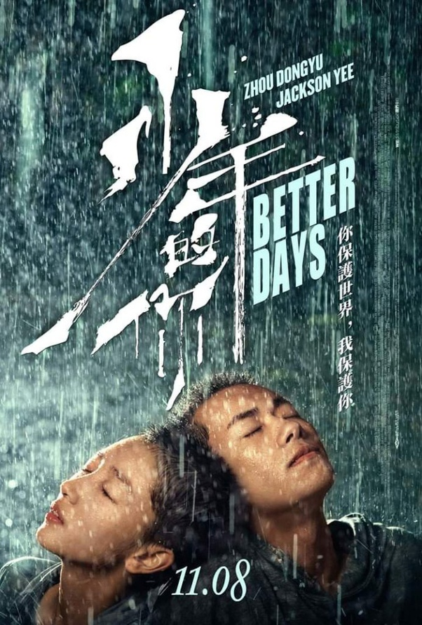
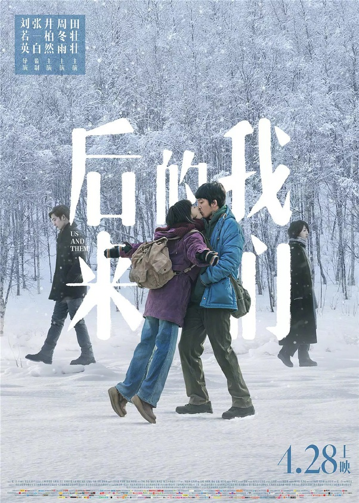

Nonton Film ini Buat Kalian yang Kehabisan List Film
1. Better Days (2019)
Better Days adalah film yang diadaptasi dari Novel "In his youth, in her beauty" karya Jiu yiexi. Dan disutradarai oleh Darek Zhang. Seorang Actor Taiwan yang rupawan.
Film ini menceritakan tentang Chen Nian (Zhou Dongyu) yang sedang fokus pada persiapan ujian masuk perguruan tinggi nasional. Persiapannya untuk ikut ujian itu membuatnya mengesampingkan semua hal dan menyendiri. Hingga satu-satunya temannya di sekolah yang bernama Hu Xiaodie bunuh diri dengan melompat dari lantai atas sekolah. nian yang maju ke depan tubuh temannya itu dan menutupi jenazahnya. Kematian teman sekelasnya itu telah membuatnya menjadi sasaran bullying yang tiada henti.
Sementara itu, takdir mempertemukan Chen Nian dengan seorang penjahat kecil bernama Beishan (Jackson Yee). Beishan adalah seorang brandalan yang ia lihat dipukuli oleh polisi. Sejak itu mereka menjadi teman baik. Namun sebuah tragedi membawa kisah mereka menjadi amat sangat menyedihkan.
Film China yang mengusung thema sensitive tentang pembullyan di sekolah yang berujung tragis. Tapi Film ini seperti paket lengkap karena tidak hanya berfokus pada kasus pembullyan semata, malah menurut saya yang paling menarik adalah kisah cinta dan pengorbanan diri yang ditampilkan sedemikan rupa sampai membuat hati saya ikut berantakan. Perjalanan cinta antar seorang yang berprestasi dengan seorang preman dikemas begitu memilukan, bahkan 2 Kiss Scene yang ditampilkan justru malah menggugah empati kita sebagai penonton.
Selain kisah cinta dan kejamnya pembullyan remaja, kita juga disuguhkan cerita bagaimana perjuangan seorang anak yang menginginkan kehidupan lebih baik sehingga berusaha mati-matian menghadapi Ujian masuk Universitas (Gaokao) di negeri gingseng sana, belajar siang dan malam tanpa lelah, bertahan sekuat tenaga agar bisa lulus dengan nilai sempurna. Karena bagi mereka, Itulah satu-satunya pintu untuk menuju hari yang lebih baik di masa depan.
Ada satu Scene yang membuat saya menangis padahal itu adalah secene tanpa dialog sama sekali, hanya tatapan yang berlinang air mata antara Chen dan Bei, senyuman yang mereka ciptakan seolah membuat saya sadar bahwa selalu ada pengorbanan yang begitu besar untuk menuju hari yang lebih baik di masa depan.
Film Better Days juga menjadi salah satu nominasi dalam penghargaan Oscar ke-93 kategori International Feature film. Dan mendapatkan banyak sekali penghargaan diajang perfiilmanan dunia lainnya.
2. US and Them (2018)
Us and Them adalah kisah cinta dengan latar nuansa tahun 2007-2009. Dua karakter utama di film ini adalah XiaoXiao (Zhou Dongyu), sang wanita biasa yang pantang menyerah untuk mendapatkan hidup layak, dan JianQing (Boran Jing) seorang sarjana IT yang sangat terobsesi dengan game.
Kisah film Us and Them diawali ketika turun salju pada tahun 2007, tepat saat malam tahun baru China. Semua orang berbondong menaiki kereta untuk berkumpul bersama keluarga di kampung halaman masing-masing. Begitu pula yang dilakukan oleh XiaoXiao dan JianQing.
Ketika seorang kondektur kereta hendak memeriksa tiket XiaoXiao, ia malah tidak menemukannya di tas. Lalu, muncul JianQing dari gerbong depan dan berkata bahwa tiket kereta XiaoXiao telah ia temukan.
Begitu awal pertemuan mereka bermula. Di tengah perjalanan, ternyata kereta harus berhenti karena cuaca buruk. XiaoXiao dan JianQing beserta kedua temannya lalu memilih untuk berjalan kaki sampai tempat tujuan mereka. Bersenda gurau dan juga merasa cocok, mereka berempat pun menjadi teman dekat. Karena tidak memiliki keluarga maupun kerabat yang dapat ia temui untuk merayakan tahun baru bersama, XiaoXiao pergi menemui keluarga besar JianQing. Mereka lantas semakin dekat, dan kerabat JianQing pun menyukai XiaoXiao karena keramahannya. Bahkan, kerabat JianQing semula mengira keduanya sudah menjalin hubungan. Namun, hal itu disangkal oleh XiaoXiao yang menganggap JianQing hanya sebatas teman dekat. Sebenarnya, obsesi XiaoXiao adalah memiliki.
JianQing lalu menemukan pekerjaan tetap sebagai Customer Service. Sayang, akibat tidak dapat mengontrol emosi, ia memaki seorang pelanggan. Alhasil ia dipecat. Kondisi ekonomi yang sulit membuat XiaoXiao dan JianQing kerap bersitegang. Bahkan, pasangan ini diusir dari rumah kontrakan. JianQing juga hanya menjadi pemain game pengangguran. Oleh karena tidak sanggup menghadapi keadaan, akhirnya XiaoXiao pergi meninggalkan JianQing seorang diri. Sepuluh tahun kemudian, XiaoXiao dan JianQing bertemu lagi di pesawat saat perjalanan menuju kampung halamannya.
Sebenarnya Saya sudah nonton film ini dari tahun 2019, namun karena baru beres nonton Better days yang dibintangi Zhou Dongyu yang actingnya begitu memukau, Saya lantas re-watching Film ini karena mau lihat Zhou lagi.
Film tentang kisah cinta realistis remaja yang kandas. Dengan alur waktu maju mundur, yang uniknya biasanya masa lalu digambarkan dengan latar tone hitam putih, namun US and Them sebaliknya.Kita akan diajak melihat masa depan dengan visualisasi hitam putih. dan Masa sekarang dengan penuh warna cerah.
Kisah antar Jianqing dan Xiaoxiao yang berhasil membuat saya patah hati berkali-kali. Untuk orang-orang yang sedang patah hati cocok banget nonton film ini, supaya semakin tahu bahwa menjadi lebih baik adakalanya dengan merelakan yang memang sudah terlepas. Dan ketika sudah terlepas, kita akan tetap baik-baik saja.
Film ini juga banyak mendapatkan pengharagaan internasional lainya. Dan membawa penyanyi sekaligus artis Reni Liu menjadi Sutradara yang patut dipehitungankan.